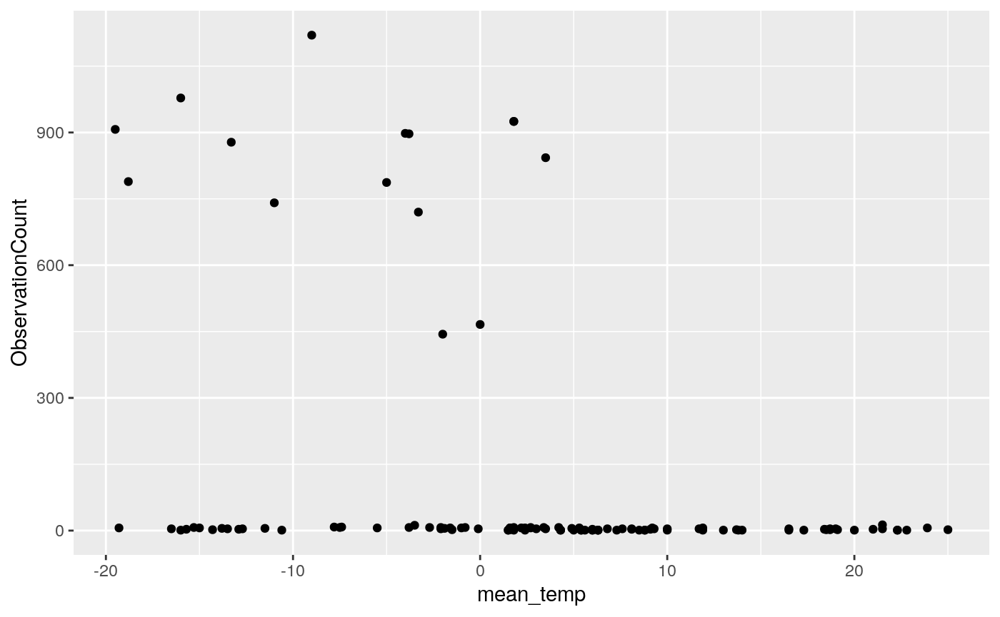
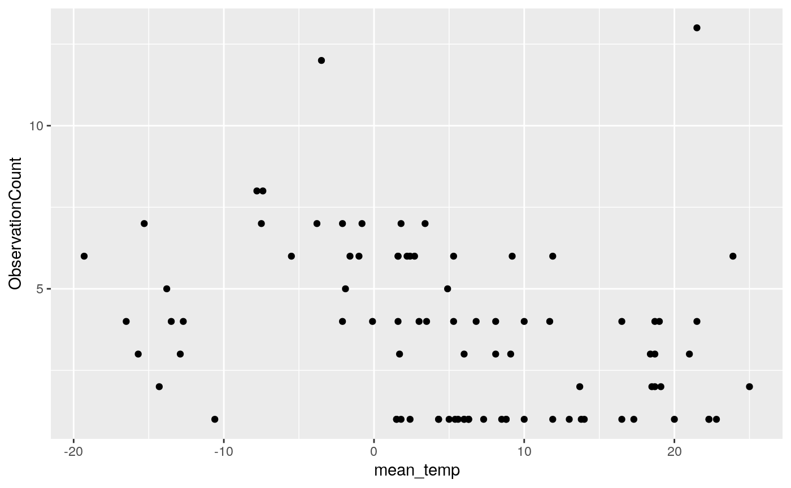

Climate data can be important in analyses of population presence/absence as some species may be more or less active depending on rain, temperature, or wind. Climate may also affect the odds of detecting species that are present (e.g., in windy conditions it may be harder to detect small birds in trees or to hear their vocalizations).
In this tutorial we will download climate data from Environment and Climate Change Canada using the weathercan package and add it to naturecounts data for analysis.
We’ll load the packages and filter the included data to only observations of black-capped chickadees since 2000. We’ll also convert the ObservationCounts to numeric for plotting later on.
The first step is to find data that matches the locations of our observations. To do this we need to see which locations we have.
locs <- bcch %>%
select(latitude, longitude, survey_year) %>%
group_by(latitude, longitude) %>%
summarize(start_year = min(survey_year), end_year = max(survey_year)) %>%
ungroup()
locs
#> # A tibble: 41 x 4
#> latitude longitude start_year end_year
#> <dbl> <dbl> <int> <int>
#> 1 45.4 -76.3 2013 2013
#> 2 45.5 -77.7 2011 2011
#> 3 45.5 -77.5 2011 2012
#> 4 45.6 -77.4 2001 2004
#> 5 45.6 -77.1 2012 2012
#> 6 45.6 -77.1 2012 2014
#> 7 45.6 -77.1 2011 2011
#> 8 45.6 -77.1 2008 2008
#> 9 45.6 -77.2 2010 2010
#> 10 45.6 -77.4 2011 2011
#> # … with 31 more rowsThere are quite a few different locations (41), meaning we may have to download weather data independently for different sites. It will depend on how close these locations are to the available weather stations.
We’ll use the stations_search() function from the weathercan package to find the closest station for each location. We only care about daily climate data (as opposed to hourly or monthly data), so we’ll specify interval = "day". We’ll also filter the results to return only stations that were active during the period wherein that location was surveyed.
If you’re familiar with the purrr package, this could also be done with the pmap() function. However, for simplicity we will use a for loop here to look at each pair of locs (latitude and longitude), find the closest station within the specified data range and save it to a data frame (stns).
stns <- data.frame()
for(i in 1:nrow(locs)) {
s1 <- stations_search(coords = locs[i, c("latitude", "longitude")], interval = "day", dist = 1000) %>%
filter(start <= locs$start_year[i], end >= locs$end_year[i]) %>%
select(prov, station_name, station_id, stn_lat = lat, stn_lon = lon, start, end, distance) %>%
mutate(latitude = locs$latitude[i], longitude = locs$longitude[i]) %>%
slice(1)
stns <- rbind(stns, s1)
}Let’s have a look at what we’ve got.
Luckily, many of these sites list the same station (Petawawa Hoffman, 6900), but some more than 40km away. Whether or not this is considered too far, depends on the analysis being conducted. For now we’ll accept it.
Note: in this situation, all sites returned a climate station, but sometimes there are no stations close enough within the specified data range. These sites would not appear in this data.
Next we’ll download the data for these stations in our date range. But first, we’ll store the matched stations with their sites.
locs <- left_join(locs, select(stns, station_id, latitude, longitude),
by = c("latitude", "longitude"))
locs
#> # A tibble: 41 x 5
#> latitude longitude start_year end_year station_id
#> <dbl> <dbl> <int> <int> <fct>
#> 1 45.4 -76.3 2013 2013 5604
#> 2 45.5 -77.7 2011 2011 42967
#> 3 45.5 -77.5 2011 2012 49068
#> 4 45.6 -77.4 2001 2004 4252
#> 5 45.6 -77.1 2012 2012 49068
#> 6 45.6 -77.1 2012 2014 49068
#> 7 45.6 -77.1 2011 2011 49068
#> 8 45.6 -77.1 2008 2008 6900
#> 9 45.6 -77.2 2010 2010 49068
#> 10 45.6 -77.4 2011 2011 49068
#> # … with 31 more rowsNow we can create a list of stations, and start and end dates for the data we need.
stns <- locs %>%
select(station_id, start_year, end_year) %>%
group_by(station_id) %>%
summarize(min_year = min(start_year), max_year = max(end_year)) %>%
# Add jan 01 to the years to get the date format that weathercan expects
mutate(min_year = paste0(min_year, "-01-01"),
max_year = paste0(max_year, "-01-01"))
stns
#> # A tibble: 7 x 3
#> station_id min_year max_year
#> <fct> <chr> <chr>
#> 1 4243 2012-01-01 2014-01-01
#> 2 4252 2001-01-01 2004-01-01
#> 3 5584 2013-01-01 2013-01-01
#> 4 5604 2013-01-01 2013-01-01
#> 5 6900 2001-01-01 2017-01-01
#> 6 42967 2011-01-01 2011-01-01
#> 7 49068 2010-01-01 2015-01-01So we know which stations and which years we need data for. Now to download the data! If all the data have approximately the same date range, we could download everything at once, simply by specifying the outer limits of the date range:
climate <- weather_dl(station_ids = stns$station_id,
start = "2001-01-01", end = "2017-01-01",
interval = "day")However, where the date ranges differ by a substantial amount, it might be a faster download to loop over the stations individually.
climate <- data.frame()
for(i in 1:nrow(stns)) {
climate <- rbind(climate,
weather_dl(station_ids = stns$station_id[i],
start = stns$min_year[i],
end = stns$max_year[i],
interval = "day"))
}
#> Some variables have non-numeric values (spd_max_gust), for stations: 42967
#> Replaced all non-numeric entries with NA. Use 'string_as = NULL' to keep as characters (see ?weather_dl).
#> Some variables have non-numeric values (spd_max_gust), for stations: 49068
#> Replaced all non-numeric entries with NA. Use 'string_as = NULL' to keep as characters (see ?weather_dl).Now that we have the data, we can join it to our naturecounts data.
First we’ll create a dates column.
Now we’ll add the station ids.
bcch <- left_join(bcch, select(locs, station_id, latitude, longitude),
by = c("latitude", "longitude"))Finally we’ll add the daily temperature data by date and by station id.
bcch <- left_join(bcch, select(climate, station_id, date, mean_temp),
by = c("station_id", "date"))
#> Warning: Column `station_id` joining factor and character vector, coercing
#> into character vectorLet’s take a quick look at the data.
ggplot(data = bcch, aes(x = mean_temp, y = ObservationCount)) +
geom_point()
#> Warning: Removed 13 rows containing missing values (geom_point).
Looks like the big flocks are only observed when temperatures are getting chilly. Interestingly, it also looks like those data are from Christmas bird counts. So perhaps it is that more birds are detected during a Christmas Bird count, which generally takes place during chillier weather.
filter(bcch, ObservationCount > 300) %>%
pull(Locality) %>%
unique()
#> [1] "Christmas Bird Count, Pembroke"
#> [2] "PAFN: Christmas Bird Count, Pembroke"
#> [3] NA
#> [4] "PAFN: Killaloe Christmas Bird Count"If we look at the data excluding Christmas bird counts
ggplot(data = filter(bcch, !str_detect(tolower(Locality), "christmas")),
aes(x = mean_temp, y = ObservationCount)) +
geom_point()
#> Warning: Removed 12 rows containing missing values (geom_point).